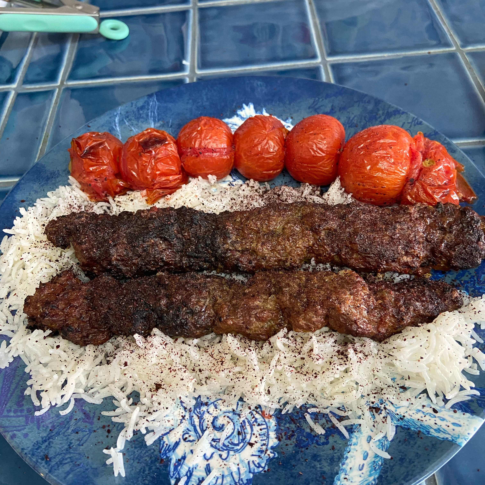

Hi-Rise Easy Yorkshire Pudding

Description
Kabob koobideh is made with ground lamb or beef or a combination of the two. This is one of the most delicious kabob recipes I have ever found. The kabobs are usually grilled over hot coals or any BBQ.
Ingredients
- 2 onions, peeled
- cheesecloth
- 1 pound ground lamb
- 1 pound ground beef
- 1 green onion, diced
- 2 teaspoons baking powder
- 1 teaspoon salt
- 1 teaspoon ground black pepper
- 1 teaspoon sumac powder
- ½ teaspoon ground turmeric
- 2 eggs
- 8 (10 inch) metal skewers
Steps
- Shave onions with a grater into a fine mesh strainer. Gently press pulp into the strainer to remove juices. Place pulp into the center of the cheesecloth and gently press until no further juice drips out.
- Place lamb and beef in a pot. Add green onion and onion pulp; mix until thoroughly combined. Mix in baking powder, salt, pepper, sumac, and turmeric. Add eggs and mix thoroughly. Cover the pot and place in the refrigerator until flavors have melded, at least 30 minutes.
- Preheat an outdoor grill for medium heat and lightly oil the grate.
- Mold meat mixture onto the skewers.
- Cook on the preheated grill, rotating every minute, until nicely browned on all sides, and meat is no longer pink in the center, about 25 minutes.